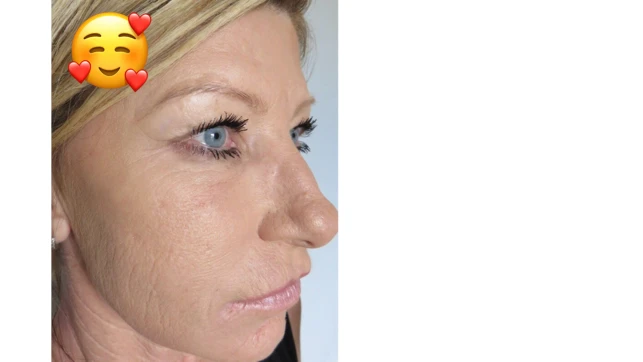

Beleza
Conheça o “Truque dos Elefantes” que obriga o pé de galinha e rugas profundas a desaparecer de forma instantânea.
“Aqui, em nossos estudos, as 160 voluntárias tiveram uma redução média de 93,7% de suas rugas e do aspecto mole de seu rosto na hora e sem nenhum tratamento estético caro.”
- Dra. Suzana Martins, médica dermatologista e pesquisadora da Universidade de São Paulo.
O “Truque dos elefantes” já está sendo recomendada por dermatologistas, principalmente para mulheres entre 35 e 80 anos para eliminar as rugas e a flacidez que as deixa com a pele de seu rosto igual uma “maria mole”.
E como toda descoberta revolucionária, tudo isso começou por um belo acidente, quando um grupo de cientistas da USP (Universidade de São Paulo) comprovou cientificamente algo chamado de “Truque do elefante” pode estar relacionado com a cura da flacidez e rugas profundas em mulheres, reduzindo em até 93,7% a pele enrugada.
Por isso, se você sente que o seu rosto está ficando mais “mole” com o tempo, mais flácido, sem a elasticidade e firmeza que você tinha há alguns anos atrás…
Se você percebe que as rugas vem aumentando (aquela que te faz passar vergonha ao simplesmente pensar em sair junto com as suas amigas)…
Se você tem aquele conjunto de rugas que fica acima e no canto da boca que te faz ficar horrível nas fotos das redes sociais…
Ou ainda, se você tem um rosto abatido, castigado pelo tempo, com os famosos e temíveis “pés de galinha” no canto de cada um dos seus olhos, e também o “bigode chinês” na região da sua boca…
Então esse “Truque dos Elefantes” pode ser a solução que você procura para recuperar a elasticidade e firmeza que a sua pele tinha há alguns anos atrás, eliminando de uma vez por todas a “vergonha” que você sente do seu rosto mole e enrugado, fazendo você se sentir orgulhosa mais uma vez de poder olhar no espelho e gostar do que vê.
Se você é mais uma das mulheres que sofre com algum desses tipos de rugas profunda em seu rosto, você tem apenas três opções para lidar com este problema:
1.Aceita o seu destino cruel, e vive presa dentro de um rosto que é mais enrugado que um maracujá;
2.Fazer cirurgia plástica, botox ou outros procedimentos estéticos caros, invasivos e algumas vezes, até mesmo perigosos para sua saúde;
3.Ou você pode olhar mais carinhosamente para essa tal de “Truque do Elefante” que, segundo um estudo científico da Universidade de São Paulo feito com 160 voluntárias, pode acabar (em média) com até 97,3% das rugas após 7 minutos de uso.

Descubra hoje no Blog Pele de Barbie por que o “Truque dos elefantes” funciona tão bem para a pele… e se você estiver lendo essa matéria até também vamos te ensinar como você pode testar esse tal de “Truque dos elefantes”, para que você possa recuperar a pele lisinha e firme que você tinha aos 25 anos de idade, e mais importante… se sentir bonita mais uma vez.
“Eu tenho 42 anos, e as pessoas achavam que eu tinha 63! Depois da gravidez, minha pele ficou acabada demais, nunca mais tive o prazer de me maquiar e se sentir confiante…
Só quem passa por isso sabe o que é ter a autoestima no FUNDO DO POÇO! Sempre que olhava no espelho, me sentia arrasada por causa das rugas. Meu rosto era mole, mas mole MESMO e com muitas rugas daquelas que nenhuma maquiagem esconde!
Cada foto com a família era uma HUMILHAÇÃO. Eu era a irmã mais nova que parecia ser a velha de tão acabada.”
– Joana Marinho , 42, brasileira que participou do estudo.
Truque dos elefantes explicada por pesquisadores anti rugas
Para você entender como esse “Truque dos elefantes” funciona na pele, você tem que entender como as rugas profundas surgem no seu rosto, e para isso temos que falar do modo como os elefantes gostam de se banhar com lama.
Você já viu algum bebê elefante sem rugas?
Até então, a suspeita era que a lama ajudava somente a manter sua pele resfriada, quando na realidade eles banham seus corpos para proteger o corpo da radiação solar.
Uma das partes que ficam mais expostas sem a proteção de lama é sua cabeça cheia de rugas e extremamente profundas, essa condição é natural para a sobrevivência e serve para proteger que a radiação prejudique sua saúde.
Isso também explica o motivo pelo qual até mesmo o bebê elefante possui rugas tão profundas, mesmo sendo tão pequeninos.
Essas rugas não surgem por causa do envelhecimento, genética ou nada do tipo.
Esse tipo de rugas surgem como um mecanismo de proteção contra a radiação solar.
Por isso não é qualquer tratamento que consegue fazer essas rugas sumir.
E depois de 13 anos de análises, o grupo de cientistas infelizmente conseguiu provar uma grande semelhança dessas rugas em nosso corpo humano.
O nosso corpo constrói rugas e com aspecto profundo semelhante para proteger o corpo.
Se você não corrigir isso logo, sua pele continuará piorando de acordo com o tempo.
E se pudéssemos proteger a pele com uma camada extra de proteção? Assim nossa pele nunca mais iria enrugar. É aí que entra esse tal “Truque dos elefantes”.
E se você é mulher e possui entre 35 e 80 anos, leia essa matéria completa e entenda como esse estudo ajudou os cientistas a desenvolverem uma espécie de segunda pele.
Que segundo dados, 9 a cada 10 mulheres estão assustadas ao sentir o poder dessa tecnologia que é capaz de preencher e apagar rugas de forma instantânea.
“Segunda pele”. O truque dos elefantes que apaga as rugas profundas e olheiras.

Mas os dias de glória chegaram, essa incrível tecnologia está ganhando o coração de mulheres que já tentaram de tudo para conseguir uma pele lisinha e perfeita, mas até agora só perderam tempo, dinheiro ou até mesmo lágrimas.
Com esse estudo comprovado os Cientistas conseguiram desenvolver uma fórmula em Sérum que quando seca forma uma micro película elástica e invisível que tem força o suficiente para esticar a pele na hora.
O Sérum pode ser aplicado à pele para diminuir a aparência de rugas, pele flácida abaixo dos olhos, olheiras e bigode chinês.
Depois de longos 17 anos de uma série testes, a revista especializada Metanutre informou que essa "segunda pele" é aplicada sobre a pele da pessoa, e tem efeito instantâneo logo no seu primeiro dia de aplicação.
Após a primeira aplicação esses foram os resultados:
“Por mais que eu passasse todos os cremes ou usasse todas as maquiagens eu nunca me via jovem como as outras mulheres, até que minha filha me contou sobre esse teste com esse novo tipo de tecnologia que age de forma instantânea..”
– comenta Joana.
“Comecei a fazer o tratamento com esse novo Sérum, e não precisei esperar nem sequer 1 mês para sentir os resultados, a minha pele começou a desamassar aos poucos como se fosse um truque de mágica. Além de que depois de um mês, a cara de abatida diminuiu bastante”
Também senti efeitos com seu uso contínuo. E vou contar com mais detalhes:
“Depois de uns 3 meses testando a fórmula, a minha cara deixou de ficar com aspecto de mole. O resultado foi inacreditável, e eu conseguia ver a mudança dia após dia.
Sumiu também aquela ‘papa de tartaruga’. Nessa hora eu tava tão empolgada que até queria mudar a alimentação para ajudar ainda mais a minha pele a se recuperar, mas os doutores me falaram para continuar comendo igual, senão eu poderia alterar os resultados reais do teste”
– Diz Joana, ao nos entregar a foto de antes e depois que você vê acima.
“Depois de 5 meses, eu consegui me livrar do “pé de galinha” e do bigode chinês, que me deixavam muito abatida e agora posso voltar a usar maquiagens com orgulho e confiança novamente, pois antes eu tinha muita vergonha da minha aparência.
“Esse tal “truque do elefante” não é uma fonte da juventude, isso não existe… mas com certeza eu ganhei uma pele de princesa de forma MUITO RÁPIDA, e uns 15 anos a menos com o uso, isso SIM!”
– Conta Joana, dando uma gargalhada.
Quando perguntamos o que Joana mais gostou, ela conta:
“Eu vivi a minha vida passando tudo o que você pode imaginar para evitar as rugas. Fazia massagem facial, rotina diária, hidratava e nada funcionou tão bem.
“Os médicos me falaram que esses tratamentos comuns como cremes e cápsulas de colágeno até ajudam, mas nada iria tratar tão bem esse tipo de pele que está com rugas mais profundas e cravadas.
Mas o lado positivo é que o nosso corpo é muito bom em se adaptar e se curar.
Se ele tiver as ferramentas necessários, nesse caso, o nutriente que me salvou foi o “Truque dos elefantes”.
Ver suas rugas cravadas sumirem de forma instantânea foi o que mais a fez se sentir feliz.
“…Tudo aconteceu tão natural e de forma simplificada que logo após receber o produto eu usei e a minha vizinha de cima perguntou se eu tinha feito plástica (risadas) e eu corri de volta para casa para tirar uma foto. “
Joana se sentia humilhada por suas rugas cravadas acima de sua boca, e não usava mais batom, até mesmo em eventos especiais. Mas somente o truque do Elefante foi capaz de realizar essa transformação em tempo recorde. Siga abaixo os resultados finais dos testes:
• Seu rosto após usar o Efeito Instatâneo. Redução de 97,3% no “pé de galinha”
• Resultado após o primeiro dia de aplicação com uma redução de incríveis 83% de todas as suas rugas profundas.
Opinião de um profissional qualificado:
“O seu corpo é uma máquina de sobrevivência, e ele faz de tudo para manter você viva e saudável. Ele quer que a sua pele seja radiante, bonita, e saudável. Mas para isso, você deve ajudar ela, fornecendo “tijolos” para que ela possa se reconstruir.
Os cremes são bons para hidratação, mas para realmente reconstruir a pele de forma instantânea, apenas o truque do elefante vai funcionar, e a prova disso é o estudo que fizemos sobre o Truque do elefante”
- Dr. Carlos Marcelo, pesquisador e dermatologista.
Isso significa que nenhuma mulher precisa esperar tanto pra ficar mais jovem porque esse novo Sérum com tecnologia Efeito instantâneo, funciona da mesma maneira que o truque dos Elefantes e "cancela o mecanismo de defesa natural que enruga a pele" e resgata a juventude de forma imediata.
Tudo isso de forma segura, e sem ter que gastar com procedimentos estéticos muito caros de maneira simples e fácil no conforto de sua casa. É tão simples de usar que esse ritual leva em média 5 minutinhos para ser realizado.
Por esse motivo de simplicidade, esse composto 100% natural está conquistando brasileiras que ao usar esse composto se sentem com um poder de autoestima logo no primeiro dia ao sentir na sua pele.
A fórmula foi batizada com o nome de Age Renova e ela é a sérum preenchedor de rugas composta pela fusão de nutrientes premium patenteadas com tecnologia coreana em dosagens específicas com alta eficácia para apagar as rugas de modo instantâneo.
Isso significa que somente Age Renova possui a licença legal para fornecer esse tratamento instantâneo no Brasil.
Uma nova esperança para mulheres que sempre sonharam em ter uma pele lisinha novamente.
Esse Sérum inovador e muito mais acessível gerou uma nova esperança para grande parte das mulheres Brasileiras que já tentaram de tudo para conseguir uma pele com aparência linda e falharam.
Ao saber deste novo Sérum, Eduarda Cândido conta que ficou tentada em testar o produto.
Sempre trabalhei muito, mas apesar dessa correria do dia a dia, nunca deixei de cuidar da minha pele, seguia fielmente uma rotina de cuidados e nunca esperei envelhecer de uma forma tão brusca.
Fui pega de surpresa quando um dia estava atrasada para ir ao trabalho. Olhei para o retrovisor e pensei que havia me esquecido de passar maquiagem.
Mas quando me dei conta eu já estava com maquiagem. E foi aí que percebi que eu estava ficando muito velha.
1º DIA ANTES DA APLICAÇÃO:
Antes e depois do Age-Renova.
Então hoje quando eu soube desse novo Sérum, que ajuda a proteger e renovar a pele. O mais incrível é que ele preenche as rugas de forma instantânea. Sem sombra de dúvidas virou o meu acessório de bolsa preferido.
Na primeira aplicação já senti a enorme diferença, e ao longo do tempo eu não conseguia mais segurar meu sorriso no rosto.
DEPOIS DE 5 MIN. DE APLICAÇÃO:
Antes e depois do Age-Renova.
Ultimamente percebi olhares maliciosos de todos os cantos, alguns até de homens mais novos. Meu marido está com uma crise de ciúmes porque foi pego de surpresa com minha mudança tão rápida.
Minhas amigas não paravam de me pedir receitinhas e de implorar para eu revelar o meu segredo para ter um rostinho de princesa.
- Comenta Eduarda sorrindo.
Conclusão: em média, o Age Renova deu as 160 participantes os seguintes benefícios:
• Aparência de 7 a 17 anos mais jovem (81,3% menos “pé de galinha”.
• 83,7% menos “bigode chinês”, e uma redução total de 76% nas rugas profundas);
• Diminuição de 77% na flacidez da pele, acima da boca e pescoço ao longo prazo.
Parece milagre, mas é pura ciência.
Acredite ou não, é isso que acontece quando você dá ao seu corpo os “tijolos” que ele precisa para construir a sua pele de volta – os mesmos “tijolos” que você tinha em abundância aos 19 anos de idade.
ATENÇÃO – NÃO adquira o Age Renova antes de ler isso:
Muitas leitoras nos enviaram uma mensagem no grupo do Whatsapp dizendo que após ler a nossa matéria, adquiriram o Age Renova através do “Mercado Livre”, porém não receberam o produto ou receberam um outro produto falsificado da china!
Isso acontece porque alguns “safados” estão se aproveitando da popularidade do Age Renova para vender produtos falsificados da china.
Para proteger nossas leitoras, entramos em contato com os fabricantes originais do Age Renova, e eles nos informaram o seu site oficial, que você encontra abaixo.
Desconto Especial:

Além disso, eles também nos agradeceram por ajudar a lutar contra os falsificadores, e concordaram em oferecer uma promoção exclusiva para leitoras do Blog Pele de Barbie, um desconto de até 50% no preço do produto, METADE que você iria investir, e uma garantia espetacular, chamada de “Garantia Blindada Age Renova”, mas apenas para quem agarrar a oportunidade até o dia . Se você estiver lendo após este dia, por favor, desconsidere esta oferta.
Confira a Garantia Blindada Age Renova abaixo:
“Você, leitora do blog Pele de Barbie, tem direito a testar o nosso poderoso Sérum Instantâneo chamado de Age Renova, por 30 dias.
Apenas dê o seu voto de confiança e veja o poder desta tecnologia no na sua pele. Se dentro de trinta dias, você…
• Não banir o “pé de galinha” e “bigode chinês” do seu rosto…
• Não suavizar as rugas que te impedem de olhar no espelho e sentir orgulho do que vê…
• Ou se você não gostar de qualquer coisa (até mesmo do tom do sérum)…
Então entre em contato com a gente pelo email atendimento@agerenova.com, que compramos de volta todos os potes de você, pelo mesmo valor que você pagou.
Isso significa que você não arrisca absolutamente nada ao testar o Age Renova, a não ser perder esta oportunidade e continuar sem a pele lisinha de que você merece.
Nós podemos fazer essa garantia blindada por dois motivos:

1 - Sabemos que o Age Renova funciona de verdade, e a prova disso é um estudo da Universidade Americana de Denver, que confirmou cientificamente os resultados em 50 voluntários, e por causa disso, podemos oferecer esta garantia blindada e nos arriscar a comprar os potes de você de volta pelo mesmo preço que você pagou.
2 - Nós temos certeza que depois de você experimentar os benefícios do Age Renova, você não vai mais querer viver sem. E por causa disso, você vai contar para suas amigas, e as suas amigas vão contar para outras amigas, e assim vamos poder ajudar mais e mais mulheres a se livrar das rugas com a nossa fórmula exclusiva e patenteada aqui no Brasil.
Sabemos que confiar em alguém nesses dias é difícil, então apenas vá até o nosso site e veja os depoimentos que confirmam a eficácia do nosso produto. Depois, escolha o seu kit e faça o teste por 30 dias. Nós garantimos os seus resultados com o nosso próprio dinheiro.“
Essa oferta é exclusiva para leitoras da Pele de Barbie, e válida apenas enquanto durarem os estoques.
Atualização: Descontos de até 50% ainda disponíveis. Promoção válida até ou enquanto durarem os potes que os fabricantes reservaram para a nossa matéria.
Adquira o Age Renova apenas no site oficial, ou corra o risco de comprar água e óleo dos falsificadores. Clique no banner abaixo, você será redirecionado ao site oficial, onde é possível adquirir o Age Renova com desconto do Pele de Barbie de 50% Garantia Blindada Age Renova e parcelamento em 12x.

ATENÇÃO: Restam poucos frascos! Tenha vantagem com nosso link exclusivo e ganhe até 50% de desconto e parcelamento em até 12x clicando no botão acima ⬆️
Compare com o tipo de pele mais parecida com a sua.
Cris Torentino - 41 anos.
Maria Angela - 63 anos.
Milena Ditadi- 55 anos.
Maria esperança - 64 anos
28 COMENTÁRIOS
Os comentários são de responsabilidade exclusiva de seus autores e não representam a opinião deste site. Se achar algo que viole os termos de uso, denuncie. Leia as perguntas mais frequentes para saber o que é impróprio ou ilegal.
Cláudio Monteiro
Dei de presente pra minha mulher, ela realmente está mais linda. E feliz claro kkk
Sebastiana Zanoni
Eu achei que era mentira esse negócio de instatâneo, já vi tantas coisas que só ilude a gente na internet. Mas a tecnologia por trás do Agerenova realmente cumpre com o que diz. Recomendo!.
Célia Fernandes
Me arrependi de não ter comprado logo o kit completo. Faz 3 meses que eu estava tentando pegar mais e não conseguia, eu amei os resultados, mas vocês bem que podiam fabricar mais né.
Cida Rezende
Depois dos meus 30 só foi um desastre, ainda bem que encontrei esse produto no meu face, porque eu já tinha tentado de tudo e nunca deu certo. Obrigado pela descoberta, sou muito grata.
Flávia Ferreira
O cheiro é tão gostoso, assim como a pele fica macia, realmente gostei. Ia me esquecendo de dizer que eu não tenho mais rugas, me sinto adolescente com pele lisinha kkkk
Este conteúdo não recebe mais comentários.
Promoção temporária!

Blog Pele de Barbie
© Copyright 2023